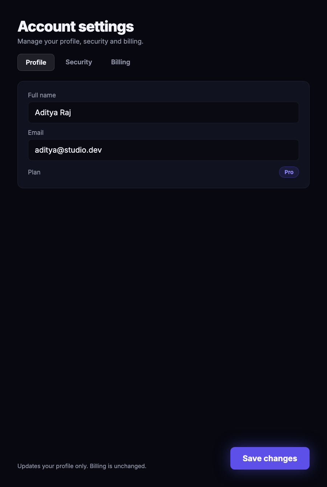

A virtual design agency in your terminal.
naksha assembles 26 specialist roles — a creative director, UX designer, UI designer, content designer, and more — to take a screen from brief to built. You run one command. The whole agency shows up.
/plugin marketplace add Adityaraj0421/naksha-studio
Type /design and naksha assembles the right specialists for the job — no prompt-engineering one persona into doing everyone's work.
The content designer owns the words, the system lead owns the tokens, accessibility owns the contrast. You see who decided what, and why.
/design-reel renders the run into a share-able 9:16 + 16:9 video — the team redesigning your screen, captioned, live.
Constraints, tokens, brand voice, and browser research persist and seed every command you run next.
A real /design pass — drag to compare the unstyled brief with the production HTML the team handed back.

drag the handle ↔ · or use arrow keys
63 commands across the whole design surface — each a real workflow, not a canned reply.
The full workflow: the right roles assemble, design the screen, and hand you production HTML you can ship.
/design Build a pricing pageRenders a /design run into a vertical + landscape video. Post-ready, captioned, with an honest end-card.
Constraints, tokens, brand, and browser research persist and seed every future command automatically.
/naksha-remember · /naksha-browseFigma to code, code to Figma, responsive variants, design systems, and developer handoff docs.
/figma · /design-system · /design-handoffDesign review, UX audits against a brief, accessibility scoring, and brand-kit generation — the same agency that builds it also grades it.
/design-review · /ux-audit · /accessibility-audit · /brand-kitEverything here is drawn, not pasted — including this. naksha thinks in grids, ticks, and guides.
Every command is a real workflow with its own specialists — grouped by what you're making.
naksha rewrites interfaces in place. Scroll here and watch it take a crooked pass at its own site.
naksha staffs every role you'd hire a design agency for — and pulls in exactly the ones your task needs.
Yes — naksha-studio is MIT-licensed and free. There's no naksha account and no separate API key; it runs on whatever AI coding tool you already use.
Claude Code gets the full plugin — all 63 slash-commands. Cursor, Windsurf, Gemini CLI, and Copilot load the same design-team rules so the agency activates automatically on your design files. The install box up top gives the exact command for each.
Claude Code installs as a marketplace plugin (/plugin marketplace add …) with every command available. The others drop a single rules file (.cursor/rules, .windsurfrules, GEMINI.md, or copilot-instructions.md) so the same 26-role team guides design work inline.
No. naksha is just commands and skills that run inside your AI tool — there's no naksha server and no telemetry. The only time it reaches the network is when you point /naksha-browse or an audit command at a URL you choose.
naksha itself is free; it spends the tokens of the AI tool you're already paying for. No extra subscription.
For the Claude Code plugin, git pull — it's a live symlink, no reinstall. For the rules-file installs, re-run the one-line curl from the install box.
26 roles design your screen, live. One command, in the terminal you already have open.
Get naksha →